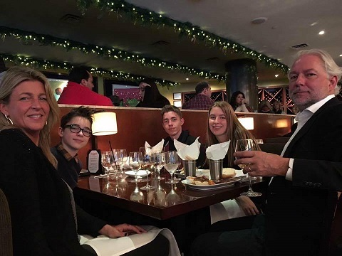

Het is een vakantiehuis aan de Belgische kust dat voor een periode naar keuze gehuurd kan worden. 
Louis Heeft in het verleden verschillende hobby's gedaan zoals: Zeilen, Schermen, Roeien.
Eerste graad : ASO aan Sint Theresia College, Kapelle op den bos
Tweede graad : TSO Handel aan Sint-Angela, Leuven
Derde graad : TSO Informatica aan Coloma Plus, Mechelen.
In zijn vrije tijd interesseerd Louis zich in E-commerce en technologie startups.